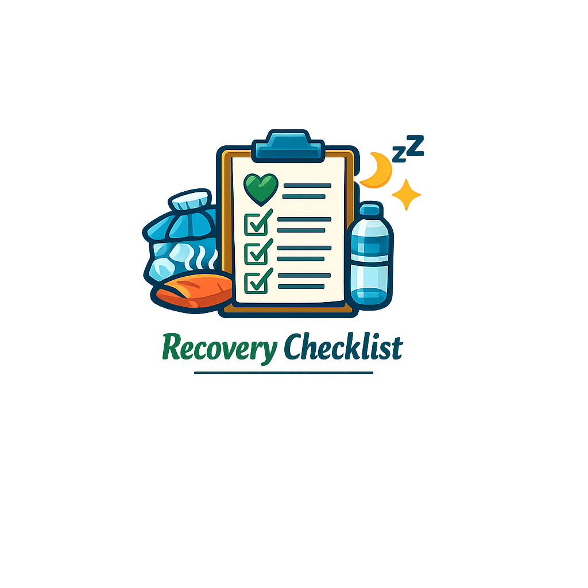
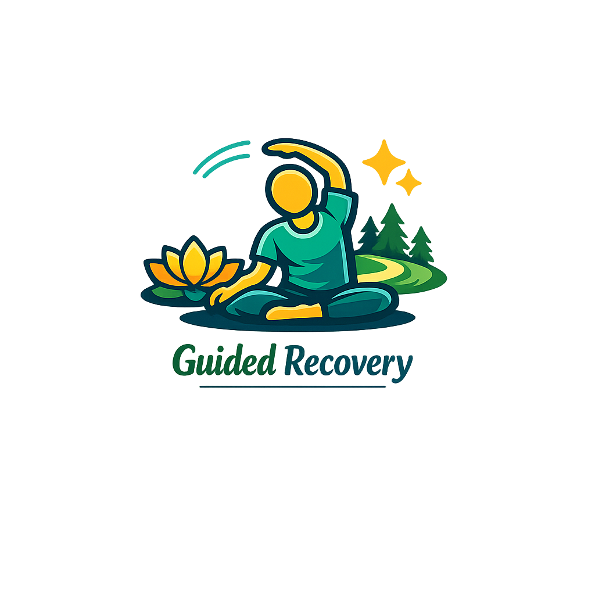

Recovery
Use these tools to support your healing and track your daily progress.

- Ice or heat therapy (20 minutes max)
- Gentle stretching (5–10 minutes)
- Hydration (8–10 cups of water)
- Sleep tracking (7–9 hours)
- Pain level notes (scale 1–10)
- Balanced meals
- Limit processed foods
- Mindful breathing
- Gratitude journal
- Connect with a support person

- Breathing exercises (box breathing)
- Mindful walking (focus on each step)
- Gentle yoga (child’s pose, cat-cow)
- Progressive muscle relaxation
- Nature visualization (forest, stream)
- Soothing music or soundscapes
- Reflective journaling
- Guided meditation
- Aromatherapy or warm bath
- Stretch + breathe with calming scent
- Mobility improvements (range of motion)
- Pain levels (daily notes)
- Sleep quality (hours + restfulness)
- Energy levels (morning vs evening)
- Mood check-ins
- Weekly goals
- Exercise log
- Recovery calendar
- Balance + coordination notes
- Weekly reflections